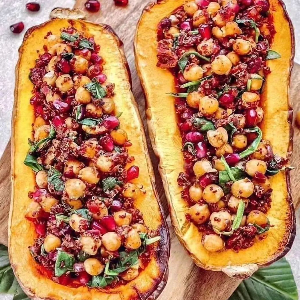

Ingredients
- 1 medium butternut squash
- 1 cup cooked chickpeas
- 1/2 cup cooked quinoa
- 1/2 cup pomegranate seeds
- 1/2 of a red onion
- 2 garlic cloves
- 2 cups of fresh spinach (or kale)
- Juice of 1 lemon
- 1 tbsp harissa seasoning or paste
- Some chopped fresh parsley
- Salt
Instructions
- Preheat oven to 425 F (220 C).
- Cut butternut in half, scoop out the seeds and put both halves on a lined baking sheet cut side
down.
- Bake for 45 to 60 minutes (depending on size) until fork tender.
- Finely dice onion and garlic and sauteÃÅ on medium heat with a splash of water or some avocado oil
until slightly browned and fragrant.
- Add rinsed chickpeas, chopped spinach, quinoa, lemon juice, parsley, pomegranate seeds, harissa and
season to taste with salt.
- When butternut is done, take it out of the oven and let it cool down until it is not too hot to
handle scoop out some of the flesh but just enough to have enough space for the filling.
- Stuff butternut with the chickpea mix and enjoy!
Source Here